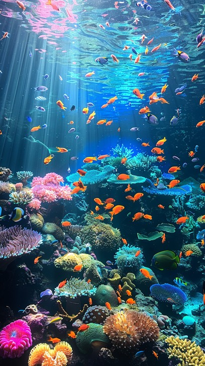
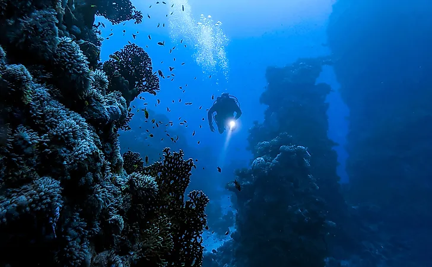

Introduction
Marine life refers to the diverse plants, animals, and other living organisms that live in oceans and seas around the world. It includes everything from tiny plankton and colorful coral reefs to magnificent whales and mysterious deep-sea creatures. The oceans cover about 71% of Earth's surface and are home to an incredible variety of life, many of which are still unknown to science. Marine life plays a vital role in maintaining the Earth's ecosystem by producing oxygen, regulating the climate, and providing food and resources for millions of people. Exploring the ocean helps us understand the beauty, diversity, and mysteries hidden beneath its surface.


Unexplored ocean
Although the oceans cover about 71% of Earth's surface, scientists estimate that only around 20% of the ocean has been explored, mapped, or observed, while more than 80% remains unexplored. The deep ocean is one of the most challenging places to study because of its extreme pressure, freezing temperatures, and complete darkness. As a result, many parts of the ocean have never been seen by humans. Every expedition into the deep sea reveals fascinating discoveries, including new marine species, underwater mountains, hydrothermal vents, and unique ecosystem.